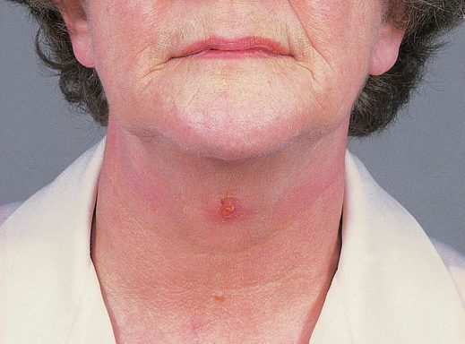
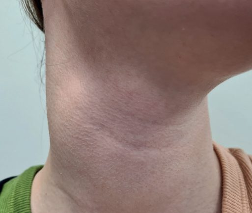

Neck Lumps
Summary
- A neck lump is a location, not a diagnosis, and the useful first move is to place it in the midline or laterally and then ask whether it is congenital or acquired.
- This page covers thyroglossal cyst, branchial cyst and its sinus and fistula, cervical lymphadenopathy, and the lymphovascular and skin lesions that present in the same way.
- Thyroid swellings and salivary gland disease have their own pages.
- Two rules do most of the work: a lymph node that persists longer than 2 months and measures more than 2 cm in diameter should be biopsied [1], and a branchial cyst at any site lies near important nerves, so previous infection and its fibrosis raise the risk of damaging them [2].
Definition
A thyroglossal cyst is a fluid-filled sac resulting from incomplete closure of the thyroglossal duct; a thyroglossal sinus results from persistence of the whole duct [2]. Incidence is under 1%, with an equal sex ratio [2].
A branchial fistula is a tract running from the neck skin through to the posterior pillar of the fauces, and is very rare; a branchial sinus is where the lower part of that tract remains open onto the neck skin; a branchial abscess is an infected branchial cyst [2].
Pathophysiology
- The thyroglossal duct arises embryologically between the first and second pharyngeal pouches [2].
- It runs as a hollow tube from the foramen caecum on the dorsal surface of the tongue, becoming a solid cord of cells migrating through the tongue into the midline of the neck [2]. The tract usually passes in front of the hyoid bone and then loops up behind it before descending in the midline, where the cells divide to form the two thyroid lobes [2].
- The duct normally atrophies in the sixth week of gestation [2].
- That loop behind the hyoid is the anatomical reason the operation must take the bone with the cyst.
The aetiology of branchial cysts is disputed. Two theories are offered: cystic degeneration of epithelial derivatives of the first, second or third branchial clefts, or cystic degeneration of epithelial elements within a cervical lymph node [2].
The neck contains large numbers of lymph glands draining areas of potential infection in the mouth, nose, tonsils and ears, which is why reactive lymphadenopathy dominates the differential [1].
Clinical features
Thyroglossal cyst
Ninety per cent present as a painless midline cyst; 10% appear on one side of the midline, usually the left [2]. Seventy-five per cent appear in front of the hyoid bone, with most of the rest anywhere down to the root of the neck [2]. It usually presents in children or young adults [2].
The classic sign has two variants, and which one you get tells you what the cyst is attached to. The cyst elevates on protruding the tongue if it is attached to the hyoid, and elevates on swallowing if it is attached to the isthmus of the thyroid [2].
Five per cent become infected, presenting as a painful red neck swelling, and 15% have a fistula to the skin, due to infection or incomplete excision [2].
Thyroglossal duct cysts are lined by pseudostratified ciliated columnar and squamous epithelium with heterotopic thyroid tissue in 20%, present as a 1–2 cm smooth midline mass rising with tongue protrusion, need no routine thyroid imaging, and are treated by the Sistrunk operation of en bloc cystectomy with the central hyoid; about 1% contain cancer, 85% of these papillary, with total thyroidectomy advised for large tumours, additional nodules, cyst-wall invasion or nodal metastases, and medullary cancer never arises in them [3]. A lingual thyroid, from failure of the median anlage to descend, may be the only thyroid tissue present, often becomes hypothyroid, is treated with hormone to suppress TSH or radioiodine ablation with replacement, and is excised only for choking, dysphagia, airway obstruction or haemorrhage after confirming normal thyroid tissue in the neck; ectopic tissue occurs anywhere in the central compartment from the oesophagus and trachea to the aortopulmonary window, pericardium and interventricular septum [3].

Branchial cyst
It presents as a usually painless neck lump in early adulthood [2]. Sixty to seventy per cent lie anterior to the upper third of sternocleidomastoid, with the posterior border beneath the muscle [2]. Other sites are the parotid gland, anterior to the lower two-thirds of sternocleidomastoid, anterior to the pharynx, and the posterior triangle [2]. Two-thirds occur on the left, and 2% are bilateral [2].
An acute branchial cyst abscess causes pain, increased swelling and occasionally pressure symptoms, difficulty swallowing or breathing [2].

Lymphadenopathy
Lymphadenopathy is very common in children and typically waxes and wanes, which is precisely why persistence is the trigger for biopsy rather than size alone [1].
Aetiology
The differential separates first by position [1].
| Position | Causes |
|---|---|
| Lateral | Lymph node; branchial sinus and cyst; cystic hygroma; sternomastoid tumour; haemangioma; lymphangioma; submandibular gland; parotid gland |
| Midline | Submental lymph nodes; thyroglossal cyst; thyroid swelling; dermoid cyst |
And then by cause. Congenital: thyroglossal cyst, branchial cyst, cystic hygroma, haemangioma, dermoid cyst. Acquired: reactive lymphadenopathy, infective lymphadenopathy, secondary tumour deposits [1].
Common causes of cervical lymphadenopathy are upper respiratory tract infection, middle ear infection, tonsillitis, parotitis, dental abscess and atypical mycobacterial infection [1]. Malignant lymphadenopathy is much less common, and may be primary lymphoma or secondary deposits, for example from neuroblastoma [1].
Embryological abnormalities relate to three processes: descent of the thyroid from the foramen caecum of the tongue, giving thyroglossal cysts; formation of the second, third and fourth branchial arches and clefts, giving branchial cysts; and formation of lymphatic vessels and veins, giving cystic hygroma and cavernous haemangiomata [1].
Skin lesions account for a further group. Dermoid cysts are usually midline above the hyoid bone and are rarely infected, and are also seen at the outer eyebrow as external angular dermoids; sebaceous cysts are rare in children, are of epidermal origin with a small central punctum, and occur most commonly on the scalp or back of the neck [1].
Lymphovascular lesions are haemangiomas, mixed capillary or cavernous, or haemangioendotheliomas, within the neck and parotid area, which may grow rapidly and lead to high-output cardiac failure or even carotid steal syndrome, and lymphatic vascular malformation, the cystic hygroma or lymphangioma, commonly in the posterior triangle [1].
Branchial anomalies, dermoids and the parapharyngeal space
- First branchial cleft anomalies run parallel to the external auditory canal (Work type I, preauricular) or through the parotid to the bony–cartilaginous junction of the canal (Work type II, angle of mandible); second cleft anomalies, the commonest, begin at the anterior border of sternocleidomastoid and pass to the tonsillar fossa deep to the second-arch facial nerve and external carotid but superficial to the third-arch stylopharyngeus, glossopharyngeal nerve and internal carotid; third and fourth anomalies are clinically indistinguishable, open into the pyriform sinus, present with recurrent thyroid infection and ascend behind the internal carotid deep to IX but superficial to XI and XII; and dermoid cysts are midline trapped epithelium from embryonic closure, separable from thyroglossal cysts by an ultrasound predictive model [5].
- Thyroglossal cysts are worked up with thyroid function tests and neck ultrasound to confirm thyroid tissue in the lower neck before Sistrunk excision, which may include a cuff of tongue base when the tract extends above the hyoid [5].
- The parapharyngeal space is an inverted pyramid from sphenoid skull base to the greater cornu of the hyoid, bounded by the buccopharyngeal fascia over the superior constrictor medially, pterygomandibular raphe anteriorly, prevertebral fascia posteriorly and the deep parotid and mandibular ramus laterally, divided by the tensor–styloid fascia into a prestyloid compartment (fat, deep parotid lobe, nodes and V3 branches) and a poststyloid compartment (IX–XII, internal jugular vein, internal carotid, sympathetic chain); nearly half its masses are parotid, 20–25% neurogenic (glomus vagale, carotid body tumour, schwannoma, neurofibroma) and 15% lymphatic, and poststyloid lesions need 24-hour urinary catecholamines because some paragangliomas are functional [5].
- The deep cervical fascia comprises investing, pretracheal (visceral) and prevertebral layers; the retropharyngeal space lies between the visceral and prevertebral layers, the prevertebral space extends to the sacrum, and neck infections can therefore track to the mediastinum and beyond [5].
Diagnosis
Ultrasound is the first investigation of choice for both thyroglossal and branchial cysts [2]. CT or MRI is reserved for complex branchial cases; for a thyroglossal cyst, CT will often show a well-circumscribed cyst related to the midline of the hyoid bone [2].
Fine needle aspiration distinguishes the two cystic fluids. In a thyroglossal cyst it may yield cloudy infected fluid or straw-coloured fluid [2]. In a branchial cyst it yields straw-coloured fluid containing cholesterol crystals, whereas a branchial abscess yields purulent fluid that may culture organisms [2].
In children a neck mass is most likely congenital, inflammatory or infectious, whereas in adults a mass over 2 cm has more than 80% probability of malignancy; FNA (ultrasound- or CT-guided if impalpable or largely cystic) is the first investigation, imaging characterises borders, consistency and location, a cystic mass may be a branchial cyst or a metastasis from oropharyngeal or papillary thyroid cancer, core biopsy is considered when lymphoma is suspected, and open biopsy for suspected carcinoma is planned along a neck-dissection incision with frozen section so that confirmed squamous carcinoma proceeds to dissection, while lymphoma biopsy need not remove the whole mass if normal structures are at risk [5].
Thresholds and severity
Biopsy a node that persists beyond 2 months and measures more than 2 cm in diameter [1].
Papillary carcinoma of the thyroglossal ductal cells is rare, at about 1%, and is treated by excision [2].
- The Sistrunk procedure is the operation for a thyroglossal cyst, and the reason is anatomical rather than oncological.
- Excision is recommended for most cysts, through a transverse midline incision in a skin crease [2].
- Divide platysma and excise the cyst by sharp and blunt dissection; on the deep surface it is attached to the hyoid bone, so excise about 1 cm of the bone in the midline, removing any underlying thyroglossal duct epithelium, this is the Sistrunk procedure [2].
- Close the wound in layers, with a suction drain if needed [2].
- Where there is a fistula or sinus in the neck, excise it through a transverse elliptical incision, again using blunt dissection and removing the middle part of the hyoid [2].
- Complications are usually very few: remove the drain and discharge the patient the same day or the next [2].
An infected thyroglossal cyst is not drained first and excised later by default. Most respond to antibiotics; surgical drainage is for an abscess that persists or fails to respond, with elective excision of the cyst once the acute infection has resolved [2].
A branchial abscess follows the same sequence. Drain it through a transverse neck incision at the point of maximum convexity, suture in a Yeates-type drain, give antibiotics, and make no attempt to remove the cyst until the infection has resolved completely [2].
Treatment and Management
Excision is the general answer, for dermoid cysts, sebaceous cysts, thyroglossal cysts, thyroid neoplasms, salivary gland enlargements and lymph gland enlargements, the last as biopsy [1].
Two lesions are exceptions. Haemangioma is usually managed conservatively unless symptomatic, though airway involvement may require aggressive treatment [1]. Lymphatic vascular malformation responds to sclerosant injection in lesions with few large cysts [1].
Most branchial cysts are excised, both to achieve a diagnosis and to prevent symptoms or complications [2].
Procedural interventions
Branchial cyst excision
Make a transverse incision over the cyst, preferably in a transverse skin crease and long enough to match its size; divide platysma and the deep fascia over the anterior border of sternocleidomastoid and retract the muscle posteriorly; remove the cyst by blunt and sharp dissection; use suction drainage and close in layers [2]. If the cystic lesion is in the parotid gland and cannot be distinguished from any other parotid lesion, extend a preauricular incision into the neck as for a superficial parotidectomy [2].
Branchial sinus and fistula excision
Excise through a horizontal elliptical incision around the neck opening, with blunt and sharp dissection of the tract as far as possible [2]. If the upper end of the tract cannot be reached, make a further transverse incision at a higher level, stepladder incisions [2]. The tract sometimes runs between the internal and external carotid arteries, and sometimes up to the pharyngeal wall in the region of the middle constrictor [2].
Complications
Four nerves are at risk during branchial cyst surgery, and each has a recognisable deficit [2].
| Nerve | Deficit |
|---|---|
| Hypoglossal | Tongue deviates to the affected side on protrusion |
| Mandibular branch of facial | Impaired movement of the lower lip |
| Great auricular | Numb ear |
| Accessory | Paralysis of trapezius, weakness of arm abduction, asymmetry, chronic pain |
Previous infection causing fibrosis increases the risk to all of them [2].
For thyroglossal cysts, the complication that recurs in practice is the fistula found in 15%, due to infection or to incomplete excision, which is exactly what the Sistrunk procedure exists to prevent [2].
Outcomes
Complications after thyroglossal cyst excision are usually very few, and the patient is discharged the same day or the next [2].
The outcome that determines follow-up rather than the operation itself is malignancy: papillary carcinoma arising in thyroglossal ductal cells occurs in about 1% [2], and a persistent enlarged cervical node may be primary lymphoma or a secondary deposit, which is what the 2-month, 2 cm biopsy threshold is designed to catch [1].
References
- Oxford Handbook of Clinical Surgery, 5th ed., Ch. 13 Paediatric surgery
- Oxford Handbook of Clinical Surgery, 5th ed., Ch. 5 Head and neck surgery
- Schwartz's Principles of Surgery, 11th ed., Ch. 38, Thyroid, Parathyroid, and Adrenal
- Bailey & Love's Short Practice of Surgery, 28th ed., Ch. 52 The pharynx, larynx and neck
- Schwartz's Principles of Surgery, 11th ed., Ch. 18, Disorders of the Head and Neck